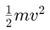
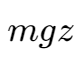
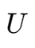
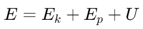
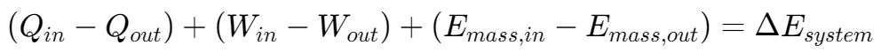
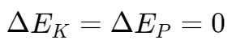
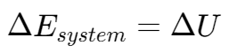

热力学第一定律
系统和边界 | Systems and Boundaries

系统的封闭与开放

封闭系统 | Closed systems
A closed system, also known as a control mass, consists of a fixed amount of mass, and no mass can cross its boundary - an isolated system.
开放系统 | Open systems
- An open system, also called a control volume (cv), is a properly selected region in space.
- Both mass and energy can cross the boundary of a control volume.
- Any arbitrary region in space can be selected as a control volume.
- There are no concrete rules for the selection, depending on convenience of analysis.
能量的形式 | Forms of energy
动能 | Kinetic energy

势能 | Potential energy

内能 | Internal energy

静止系统的总能量 | Total energy of a system (non-flowing)

热力学第一定律 | First Law of Thermodynamics
The first law of thermodynamics, is also known as the conservation of energy principle.
Energy can be neither created nor destroyed during a process, it can only change forms.
According to the first law, the energy balance of a system
热力学第一定律等式 | Equation of First Law of Thermodynamics

能量转换效率 | Energy Conversion Efficiency
Efficiency = Desired Output / Required Iuput
例题
A rigid tank contains a hot fluid that is cooled while being stirred by a paddle wheel. Initially, the internal energy of the fluid is 800 kJ. During the cooling process, the fluid loses 500 kJ of heat, and the paddle wheel does 100 kJ of work on the fluid.
Determine the final internal energy of the fluid.
知识点：热力学第一定律等式
由于水箱静止，不存在动能和势能变化：，系统的能量变化为内能变化 。
对于封闭系统,,，没有质量流动,,；水箱体积恒定，无移动边界功。
使用公式 ，